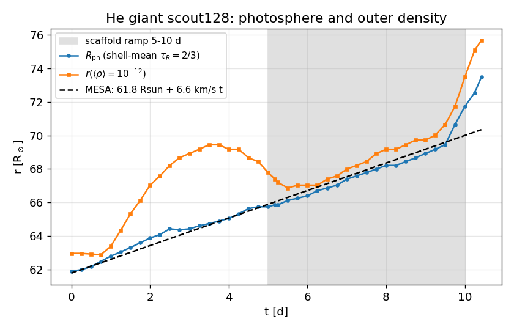
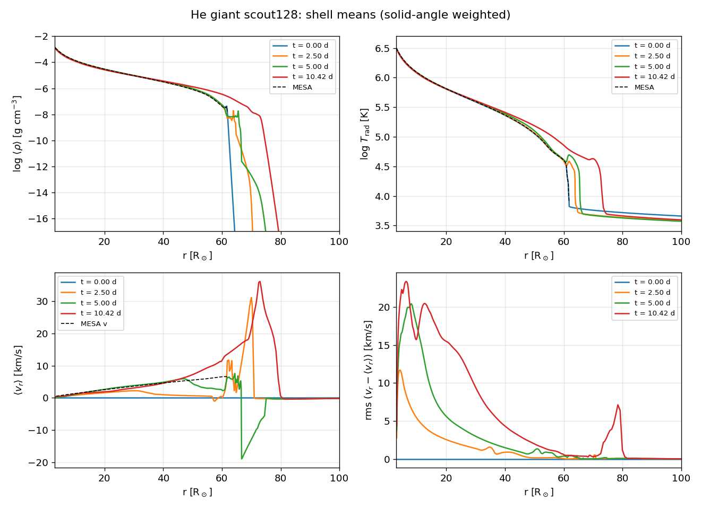
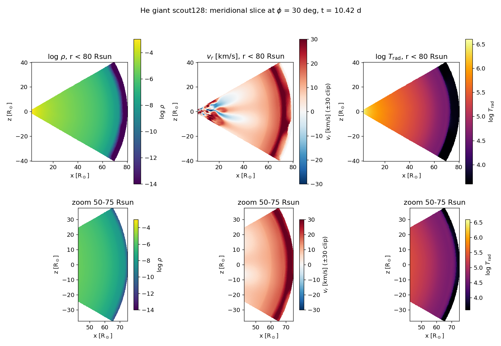
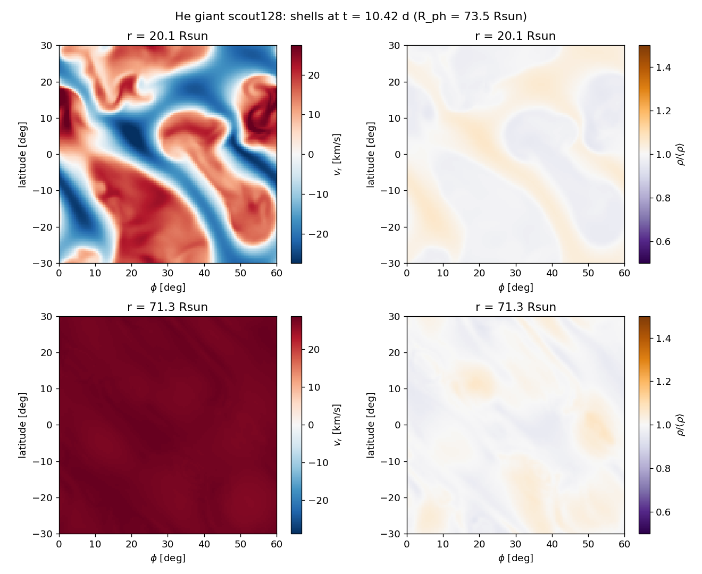
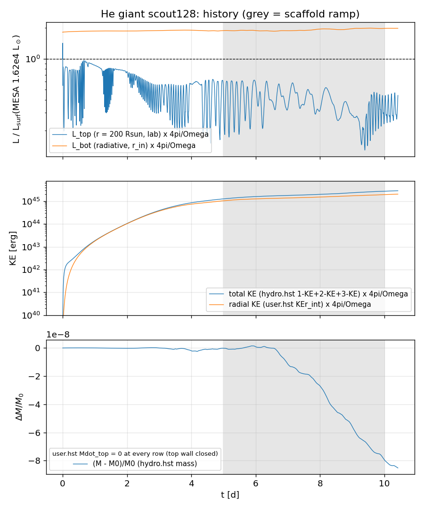

A helium giant swelling weeks before core collapse
3-D radiation-hydrodynamics (AthenaK, implicit two-moment radiation with a short-characteristics Eddington tensor) of the envelope of a hydrogen-free star caught during core silicon burning. Its helium-burning shell pumps far more energy into the envelope than the surface radiates, so the envelope is absorbing heat and expanding. The run follows that expansion.
| The star (MESA profile) | value |
|---|---|
| Model | Wu's grid, initial He-star mass 2.754 M☉, 100-day binary (MESA r15140) |
| Mass | 2.56 M☉ |
| Luminosity (surface) | 1.62 × 104 L☉ |
| Radius | 61.8 R☉ |
| Surface temperature | 8.3 kK |
| Envelope | X = 0, Y 0.93, C 0.033, O 0.016; ~1 M☉ above 1 R☉ |
| Centre | Si burning, no iron core yet |
| The simulation | value |
|---|---|
| Domain | r = 3–200 R☉; wedge θ 60–120°, φ 0–60° |
| Grid | 445 × 128 × 128 |
| Energy input at 3 R☉ | 6.8 × 106 L☉ (≈ 420 Lsurf) |
| Initial state | MESA T(r) in hydrostatic balance with our EOS and opacities |
| Convective scaffold | on until 5 d, ramped off 5→10 d |
| Now | 10.4 d · 0.83 s/step on 4 MI300A · 0 failed solves |
The star grows as MESA predicts

Structure: the envelope holds, the surface reorganises

What the flow looks like


Energy budget

Open points. (0) The photosphere's speed-up after 9.5 d coincides with the end of the scaffold switch-off and with the surface moving onto coarse radial cells; it is not yet known whether it is physical or partly resolution. (1) The light leaving the top is only about 0.3–0.6 of the MESA surface luminosity and oscillates strongly; most of the energy put in at the base goes into heating and lifting the envelope, as in MESA, but the low emergent value needs checking against the top boundary treatment. (2) The photosphere has already moved off the finely resolved radial band (60.3–64.2 R☉). A finer grid and a conservative remap are ready. A slow first solve after remapping has been traced to the remapped radiation field (the hydro remap is fine) and is being fixed before the switch.